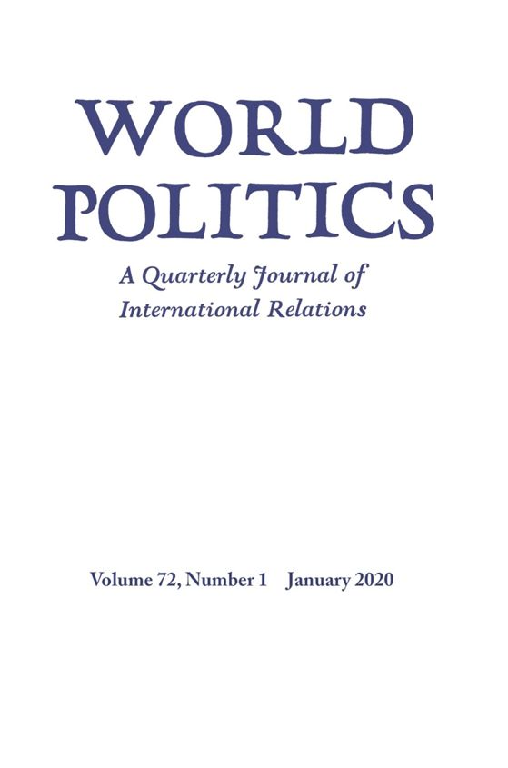

收录于合集 #新刊速递 123个
期刊简介

World Politics（《世界政治》）创刊于1948年，是享誉国际的政治科学季刊，内容涵盖国际关系和政治科学的各个领域，其主编是Deborah J. Yashar。该期刊欢迎的投稿类型有具有理论和实证贡献的研究类文章，以及有关国际关系和比较政治问题的评论性文章。2018年该期刊的影响因子为3.368，在91种国际关系类期刊中位列第7名，在196种政治科学类期刊中位列第15名。
本期编委
【编译】 崔宇涵、陈勇、赵雷、王泽尘
【校对】周玫琳
【审核】施榕
【排版】赵怡雯

本期目录
1. 民主化、实际权力与税收：来自美国内战后重建期间军事占领的证据
Democratization, De Facto Power, and Taxation: Evidence from Military Occupation during Reconstruction
2. 非正式市场中的秩序政治：来自拉各斯的证据 The Politics of Order inInformal Markets: Evidence From Lagos
3. 选举歧视 : 拉丁美洲肤色与贿选的关系
Electoral Discrimination: The Relationship between Skin Color and Vote Buying in Latin America
4. 不彻底的人权措施 — 战后斯里兰卡的问责避免问题
Human Rights Half Measures—Avoiding Accountability in Postwar Sri Lanka 摘要译文
1.
民主化、实际权力与税收：来自美国内战后重建期间军事占领的证据 ****
【题目】 Democratization, De Facto Power, and Taxation: Evidence from Military Occupation during Reconstruction
【作者】 Mario L. Chacón, 纽约大学阿布扎比分校社会科学学部政治学助理教授；Jeffrey L. Jensen, 纽约大学阿布扎比分校社会科学学部政治学讲师
【摘要】 在新兴民主国家中，对政治权利的执行有多重要？作者以美国内战后为解放的黑奴赋予选举权为例研究了这一问题。对其战略至关重要的是，战后重建期间十个南方州的黑人选举权是由美国联邦军队从外部强制执行的。作者应用三重差分模型，估算了赋予选举权及其执行对税收的共同影响。作者发现，在黑人占比较高的县中，被联邦军队占领的县比未被军事占领的县征税更多。而当军队撤出后，其税收水平的下降幅度也更大。作者还说明，在被联邦军队占领的县中，黑人政客更有可能当选，且由白人至上主义团体谋划的政治谋杀更少发生。上述发现为这一时期联邦军队在以武力限制精英俘获方面发挥的关键作用提供了证据。
How important is the enforcement of political rights in new democracies? The authors use the enfranchisement of the emancipated slaves following the American Civil War to study this question. Critical to their strategy, black suffrage was externally enforced by the United States Army in ten Southern states during Reconstruction. The authors employ a triple-difference model to estimate thejoint effect of enfranchisement and its enforcement on taxation. They find that counties with greater black-population shares that were occupied by the military levied higher taxes compared to similar nonoccupied counties. These counties later experienced a comparatively greater decline in taxation after the troops were withdrawn. The authors also demonstrate that in occupied counties, black politicians were more likely to be elected and political murders by white supremacist groups occurred less frequently. The findings provide evidence on the key role of federal troops in limiting elite capture by force during this period.
【编译】崔宇涵 【校对】周玫琳
2.
** 非正式市场中的秩序政治：来自拉各斯的证据**
【题目】 The Politics of Order inInformal Markets: Evidence From Lagos
【作者】 Shelby Grossman，前孟菲斯大学政治学专业副教授，现为斯坦福网络政策中心（Stanford Internet Observatory）研究员
【摘要】 产权对经济交易来说至关重要。但在世界上的许多地区，产权并未得到公开保证。私营市场协会可以通过提供机制框架执行协议来填补这一空缺。但是，与这一权力相伴的是敲诈勒索协会成员的能力。那么，在何种情况下私营协会将为经济活动提供稳定的环境？作者从尼日利亚拉各斯199个市场中随机抽取1179个经商者进行调查，利用所得数据进行分析，发现市场并非是在政府缺位的情况下才会维持鼓励贸易的机制，而是更多地将这种制度当作对积极的政府干预的回应。作者认为，当私营协会认为其正受到他们眼中具有掠夺性的政客的威胁，并且他们能够以己方的威胁来作出回应时，就会推出有利于贸易的政策。后一种条件在经商者之间没有相互竞争的情况下更容易出现。为了保持势力均衡的局面，协会不会敲诈勒索：它需要获得经营者的拥护以维持其威胁的可信度，以实现对抗掠夺性政客的动员。
Property rights are important for economic exchange, but in many parts of the world, they are not publicly guaranteed. Private market associations can fill this gap by providing an institutional structure to enforce agreements, but with this power comes the ability to extort from group members. Under what circumstances do private associations provide a stable environment for economic activity? The author uses survey data collected from 1,179 randomly sampled traders across 199 markets in Lagos, Nigeria, and finds that markets maintain institutions to support trade not in the absence of government, but rather in response to active government interference. The author argues that associations develop protrade policies when threatened by politicians they perceive to be predatory and when the organizations can respond with threats of their own. The latter is easier when traders are not competing with one another. To maintain this balance of power, an association will not extort; it needs trader support to maintain the credibility of its threats to mobilize against predatory politicians.
【编译】陈勇 **** ** ****** ** **** ****** 【校对】周玫琳
3.
选举歧视 :拉丁美洲肤色与贿选的关系
【题目】 Electoral Discrimination: The Relationship between Skin Color and
Vote Buying in Latin America
【作者】 Marcus Johnson 纽约市立大学柏鲁克分校政治学教授，研究方向：比较政治学、种族与政治、拉美政治
【摘要】 选举会在什么情况下产生种族歧视的结果? 本文提出将选举歧视作为一种种族边缘化的选举机制，这种机制存在于拉丁美洲原住民和非洲后裔中。当选民被基于他们直观特征的入选条件动员起来时，就产生了选举歧视。通过2010年至2014年几轮“美洲晴雨表”（Americas Barometer）和一个联合实验（的数据），作者发现，在该地区拥有大量明显的黑人和原住民人口的国家中，肤色是一个关于贿选的强有力的预测指标。肤色和贿选之间的关系很大部分是因为以种族中立为目标的准则对深肤色选民产生了不平衡的影响。将财富、政治和公民参与、党派、政治利益、人际信任以及地理位置上的直观差异结合在一起，可以部分解释不同肤色依随者（client）的差距，尽管这些因素单独的影响作用因国家而异。此外，作者发现，肤色和贿选之间有一种超越这些种族中立因素的独立关系。本文的论点与发现大体解释了在拉丁美洲及其他种族分层的国家进行选举动员的结果。
Under what conditions do elections produce racially discriminatory outcomes? This article proposes electoral discrimination as an electoral mechanism for racial marginalization in indigenous and Afro-descendant Latin America. Electoral discrimination occurs when voters are mobilized under differential terms of electoral inclusion based on their observable characteristics. Using the 2010–2014 rounds of the Americas Barometer and a conjoint experiment, the author finds that skin color is a robust predictor of vote buying across countries in the region with large, visible black and indigenous populations. A significant portion of the relationship between skin color and vote buying is due to the disproportionate impacts of race-neutral targeting criteria on dark-skinned voters. Observed differences in wealth, political and civic engagement, partisanship, politicalinterest, interpersonal trust, and geography together explain a portion of the skin color–client gap, although the individual contribution of each of these factors differs by country. In addition, the author finds an independent relationship between skin color and vote buying over and above these race-neutral factors. The argument and findings in this article speak broadly to the consequences of electoral mobilization in ethnoracially stratified states in Latin America and beyond.
【编译】赵雷 【审校】周玫琳
4.
不彻底的人权措施 — 战后斯里兰卡的问责避免问题
【题目】 Human Rights Half Measures—Avoiding Accountability in Postwar Sri
Lanka
【作者】 Kate Cronin-Furman，人权律师以及政治学学者，目前是哈佛大学肯尼迪学院贝尔弗科学与国际事务中心国际安全项目的博士后研究员
【摘要】 为什么尽管威权国家建立了耗费金钱和政治资本的人权机构，却无法平息国际社会的批评？（既有的）学术文献假定，从事虚伪人权行为的国家希望说服（或欺骗）西方自由主义国家和国际上（对人权）的拥护者。但是，如果西方的人权促进者是这些不彻底的机构成立的目标受众，那么这种战略显得令人费解地被错误设计了。这种观点揭示出，威权国家对国际舆论敏感，并往往会招致更大的压力。作者认为，采取不彻底人权措施的国家是在迎合另一群以往被忽视的受众：可以在加强人权的多边努力中行使否决权的摇摆国家。这篇文章以斯里兰卡面对有关战后司法的国际压力的反应为例，阐述了上述过程。作者指出，尽管西方政府和非政府组织的压力促使斯里兰卡建立了一系列软弱的调查委员会，但这并不是试图满足或欺骗这些行为体。相反，这是其联合反制战略的一部分，目的是为了说服联合国人权理事会中的其他发展中国家反对发起国际调查，并为它们同样的行为提供政治掩护。
Why do repressive states create human rights institutions that cost them money and political capital but fail to silence international criticism? The academic literature assumes that states engaging in disingenuous human rights behavior are hoping to persuade (or deceive) liberal Western states and international advocates. But if human rights promoters in the West are the target audience for the creation of these half measures institutions, the strategy appears puzzlingly miscalculated. It reveals that the repressive state is sensitive to international opinion, and often results in increased pressure. The author argues that states engaging in human rights half measures are playing to a different, previously overlooked audience: swing states that can act as veto points on multilateral efforts to enforce human rights. The article illustrates these dynamics with a case study of Sri Lanka’s response to international pressure for postwar justice. The author shows that although the creation of a seriesof weak investigative commissions was prompted by pressure from Western governments and NGOs, it was not an attempt to satisfy or hoodwink these actors. Instead, it was part of a coalition-blocking strategy to convince fellow developing states on the UN Human Rights Council to oppose the creationof an international inquiry and to give them the political cover to do so.
【编译】王泽尘 【校对】周玫琳 **
**
扫下方二维码查看往期精彩
【新刊速递】第01期 | Review of International Studies Vol.45, No.4, 2019
【新刊速递】第02期 | International Relations Vol.33, No.3, 2019
【新刊速递】第03期 | International Organization Vol.73, No.3, 2019
【新刊速递】第04期 | World Politics, Vol.71, No.4, 2019
【新刊速递】第05期 | European Journal of International Relations
【新刊速递】第06期 | Security Studies, Vol.28, No.4, 2019
【新刊速递】第07期|International Security, Vol 44, No. 2, 2019
【新刊速递】第08期| Cambridge Review of International Affairs,Vol.32,No.4
【新刊速递】第09期| International Relations of Asia-Pacific Vol.19,No.3
【新刊速递】第10期 | International Studies Review, Volume.21, No.3,
2019
【新刊速递】第11期|Cooperation and Conflict, Vol. 54, No. 4,
2019【新刊速递】第12期
| International Affairs, Vol.95,
No.6，2019
【新刊速递】第13期|Chinese Journal of International Politics, No.4,
2019
【新刊速递】第14期|Chinese Journal of International Politics, No.3, 2019
【新刊速递】 第15期 | International Organization, No.4, 2019
【新刊速递】第16期 | International Studies Quarterly, No.4, 2019

国政学人
支持学术公益与知识传播
微信扫一扫赞赏作者 __赞赏
已喜欢，对作者说句悄悄话
取消 __
发送给作者
发送
最多40字，当前共字
上一页 1/3 下一页
长按二维码向我转账
支持学术公益与知识传播
受苹果公司新规定影响，微信 iOS 版的赞赏功能被关闭，可通过二维码转账支持公众号。